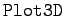
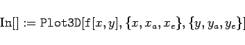
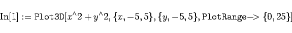
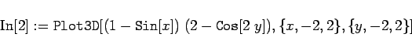

Inhalt Index DeskTop Bronstein

 Computeralgebrasysteme Graphik in Computeralgebrasystemen Graphik mit Mathematica Darstellung von Flächen und Raumkurven
Computeralgebrasysteme Graphik in Computeralgebrasystemen Graphik mit Mathematica Darstellung von Flächen und Raumkurven


Der Befehl  verlangt in seiner Grundform die Angabe einer Funktion zweier Variablen und die Wertebereiche dieser Variablen, für die die Darstellung erfolgen soll:
|  | (20.89) |
Alle Optionen sind zunächst mit der Voreinstellung belegt.
| Beispiel |
|
Für die Funktion z=x2+y2 erhält man mit der Eingabe 

Bei der Halbkugel wurde die Option |